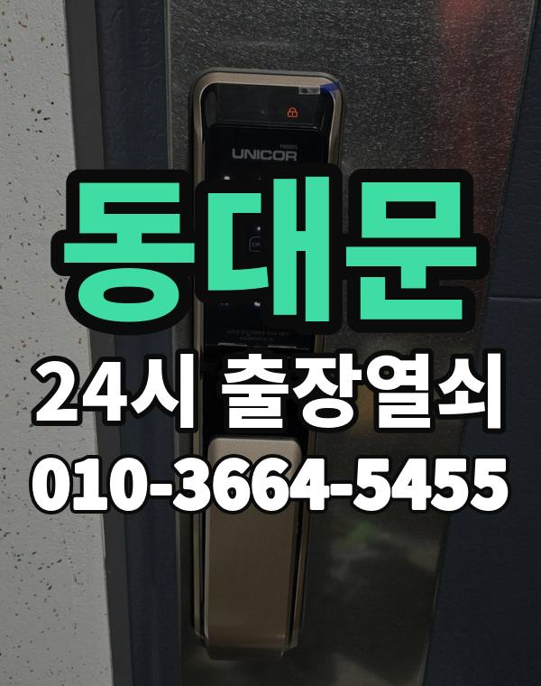

동대문은 이런 곳입니다
동대문구는 장안동, 답십리 아파트와 회기, 이문동 대학가 원룸, 청량리 일대 상가가 섞여 있습니다.
재개발로 새 아파트와 오래된 다세대가 바로 옆에 붙어 있는 곳도 많습니다.

동대문구 출장 가는 동네
- 청량리동
- 회기동
- 휘경동
- 이문동
- 전농동
- 답십리동
- 장안동
- 용신동
- 제기동
청량리동 출장열쇠, 회기동 열쇠집처럼 동네 이름으로 찾으셨어도 같은 곳입니다.
적혀 있지 않은 동네도 동대문구 안이면 다 갑니다.
동대문 출장 작업 종류
동대문 출장 부르실 때
대학가 원룸은 늦은 밤 문 잠김 연락이 잦은 편입니다.
건물 이름과 호수를 정확히 알려주시면 헤매지 않고 갑니다.
청량리역, 회기역, 답십리역, 장한평역 근처라고 말씀해 주셔도 위치 잡기가 쉬워집니다.
가까운 역이나 큰 건물, 단지 이름을 같이 알려주세요.
- 도로명 주소나 건물 이름
- 도어락 사진 한 장 (문자로)
- 신분증, 우편물 등 사시는 걸 확인할 것
전화부터 작업까지 순서는 이용안내에 적어 두었습니다.
동대문 출장열쇠 관련 글
- 서울 동대문 청량리동 도어락 번호판이 꺼졌을 때 배터리 방전 대처법
- 동대문구 청량리동 도어락 교체 전 확인할 것과 비용을 안내받는 방식
- 동대문구 답십리동 도어락 데드볼트가 안 들어가거나 안 빠질 때 원인과 손보는 범위
- 동대문구 회기동 보조키가 잠기거나 걸쇠가 걸려 문이 안 열릴 때 구분하는 법
- 서울 동대문 회기동 부모님 댁 도어락, 어르신이 쓰기 편하게 점검하고 설정하기
- 서울 동대문 휘경동 택배·분리수거 하러 나왔다가 문이 잠겼을 때 차례대로 할 일
- 동대문구 휘경동 원룸·오피스텔 현관이 잠겼을 때 공동 현관부터 호실 문까지 풀어 가는 법
- 동대문구 이문동 도어락 비밀번호, 가족과 나눠 쓰며 주기적으로 바꾸는 요령
- 서울 동대문 장안동 한밤중 현관문이 안 열릴 때 출장열쇠에 전화하는 요령
- 서울 동대문 제기동 지문 도어락이 손가락을 못 알아볼 때 점검 순서
- 서울 동대문 전농동 출장열쇠 부르기 전 사진·위치·문 상태 준비 체크리스트
- 동대문구 용신동 지문·카드·앱 스마트 도어락, 우리 집에 맞게 고르는 기준
동대문 출장열쇠 자주 묻는 질문
동대문 어디까지 출장 오시나요?
청량리동, 회기동, 휘경동, 이문동, 전농동, 답십리동 등 동대문구 전 지역 갑니다. 동대문구 안이라면 동네 상관없이 갑니다.
동대문에서 밤늦게나 새벽에도 오시나요?
24시간 전화 받고 출동합니다. 위치를 알려주시면 도착 예상 시간을 먼저 말씀드립니다.
개방에 실패해도 비용이 나오나요?
열지 못하면 비용은 없습니다. 작업 전에 금액을 듣고 정하시면 됩니다.
본인 확인은 어떻게 하나요?
사시는 분이 맞는지만 확인되면 됩니다. 신분증이나 우편물을 준비해 주세요.
동대문 도어락 새로 다는 것도 되나요?
네, 수리와 설치, 교체 모두 합니다. 고쳐서 쓸 수 있으면 고치는 쪽을 먼저 말씀드립니다.